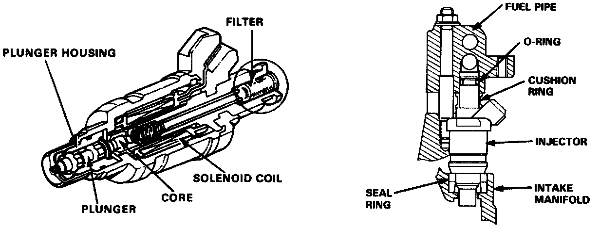
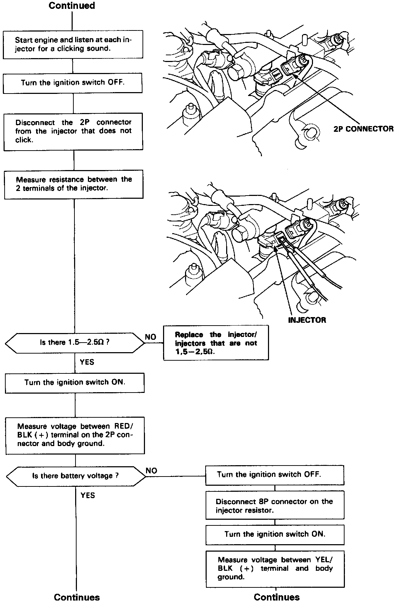

Fuel Injector: Testing and Inspection


Troubleshooting Flowchart
Self-diagnosis Check Engine light indicates code 16: A problem in the fuel injector circuit.
The injectors are a solenoid-actuated constant-stroke pintle type consisting of a solenoid, plunger needle valve and housing. When cur rent is applied to the solenoid coil, the valve lifts up and pressurized fuel is injected. Because the needle valve lift and the fuel pressure are constant, the injection quantity is determined by the length of time that the valve is open (i.e., the duration the current is supplied to the solenoid coil). The injector is sealed by an 0-ring and seal ring at the top and bottom. These seals also reduce operating noise.